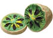
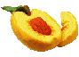
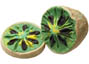
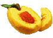

 
 
바나나
과일치고는 과당 비율이 낮고 포도당 비율이 높다는 점인데[15] 이때문에 주식 대용으로 먹을 수 있는 과일로 꼽힌다.
오렌지
비타민 C가 매우 풍부해 하나만 먹어도 일일 비타민 C 권장량을 거의 채운다.
포도
포도에는당분이 많이 들어있어서 피로회복에 좋고, 비타민A,B,C,D 등이 풍부하여 신진대사를 원활하게 해준다.
키위
일곱가지 맛이 나는 과일이라는 별칭이 있다. 이 일곱가지 과일은 각각 딸기, 바나나, 파인애플, 사과, 복숭아, 구스베리 등이다.
복숭아
체내에 흡수가 빠른 각종 당류 및 비타민과 무기질 등이 풍부하여 피로회복에 많은 도움이 된다.